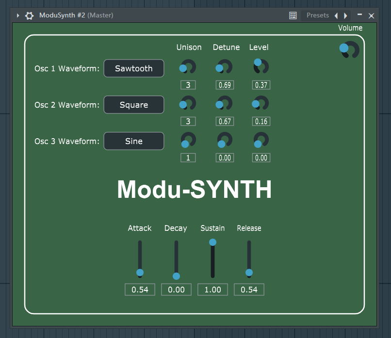

modu-SYNTH - Advanced Digital Synthesizer

Features
- Support for Standalone and VST Plugin Formats: Utilize modu-SYNTH as a standalone application or integrate it into your favorite DAW as a VST plugin.
- Four Selectable Waveforms: Choose from sine, sawtooth, square, and noise waveforms to shape your sound.
- Polyphonic Support: Enjoy polyphonic capabilities with a maximum of 64 voices for rich and expressive compositions.
- Real-time Audio Processing with Low Latency: Experience responsive audio processing with minimal latency, ensuring a seamless performance.
Usage
- Waveform Selection: Choose the waveform that suits your creative vision.
- Polyphonic Controls: Experiment with up to 64 voices for intricate and layered compositions.
- Real-time Processing: Leverage low-latency processing for responsive and dynamic sound design.
Tips for Best Results
- Experiment with different waveforms to explore diverse sonic possibilities.
- Utilize polyphonic capabilities for complex and harmonically rich arrangements.
- Fine-tune parameters in real-time to sculpt your sound with precision.
License
This synthesizer is distributed under the Apache License 2.0.